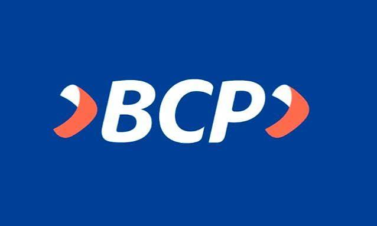

Yape
Te enviaremos por WhatsApp el número o QR confirmado para el servicio que elijas.
PAGO COORDINADO POR WHATSAPP
Consulta primero el precio y solicita los datos oficiales de pago directamente a TecnoPlus.
Te enviaremos por WhatsApp el número o QR confirmado para el servicio que elijas.

Solicita por WhatsApp los datos de la cuenta BCP y confirma el monto antes de transferir.
Verificación: envía la constancia solo en el chat oficial de WhatsApp. TecnoPlus confirmará el abono revisando su cuenta; una captura por sí sola no confirma el pago. Nunca compartas claves, códigos SMS ni datos de acceso.